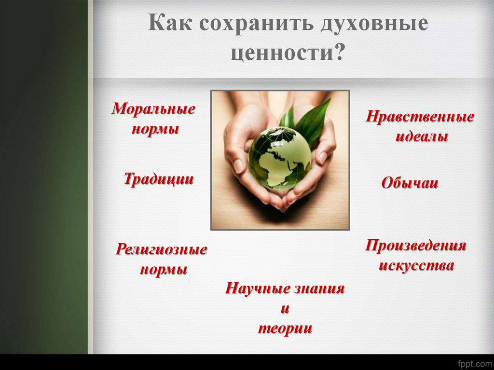
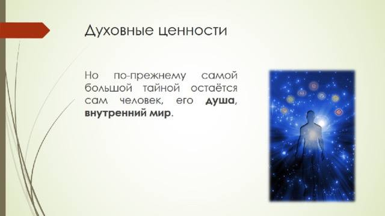

Духовные ценности – это совокупность моральных, религиозных, нравственных, этических убеждений человека, представляющих для него значимость

Культура Татарстана развивалась на стыке двух крупных цивилизаций: восточной и западной, что во многом объясняет ее многообразие. Воплощая богатые традиции и духовную самобытность народов, проживающих на территории республики, культура Татарстана одновременно олицетворяет общечеловеческие ценности и является частью мирового культурного наследия.
С Татарстаном связаны судьбы многих выдающихся деятелей культуры: писателей Льва Толстого, Гавриила Державина, художников Ивана Шишкина. Классик татарской поэзии Габдулла Тукай, поэт-герой Муса Джалиль составили славу татарской культуры.
В Год культуры построено 51 новое здание для учреждений культуры. В том числе – 47 сельских клубов в рамках беспрецедентной программы «Сельские клубы». Ежегодно на протяжении уже 4 лет в каждом муниципальном районе Татарстана республика строит по 1 современному, оборудованному, трансформируемому клубу.
В Республике Татарстан 1516 памятников архитектуры, истории и культуры, поставленных на государственную охрану. В хорошем состоянии находится 78% объектов культурного наследия, что выше среднего показателя по России на 6%. (всего 1337, без археологии 1069 объектов, в удовлетворительном 834).

Чтобы сохранить духовные ценности российского народа – милосердие, сострадание, доброту, отзывчивость - необходимо объединить усилия государства и общественных организаций, в том числе и религиозных. Сегодня государство признает особую роль традиционных религий в развитии духовно-нравственной культуры России. Оно защищает право человека исповедовать любую религию. Сегодня в нашей стране восстанавливаются памятники духовного наследия, строятся храмы, монастыри, мечети, синагоги. Тысячи паломников ежегодно посещают святые
